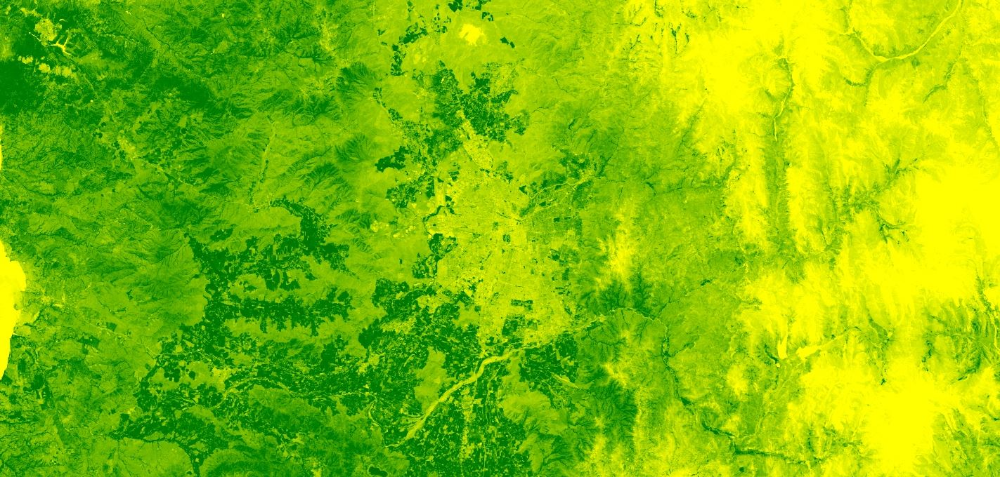
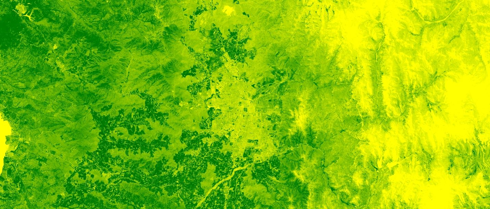
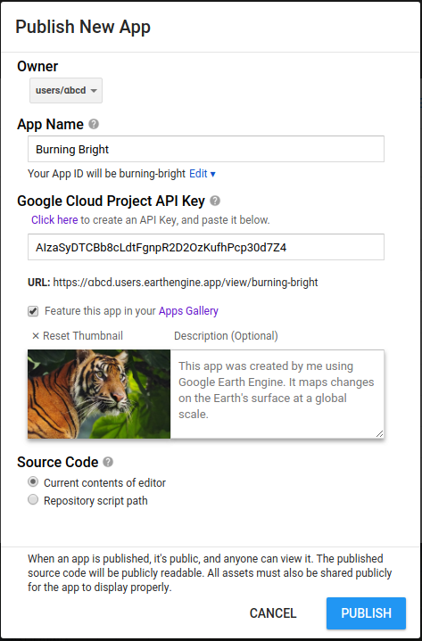
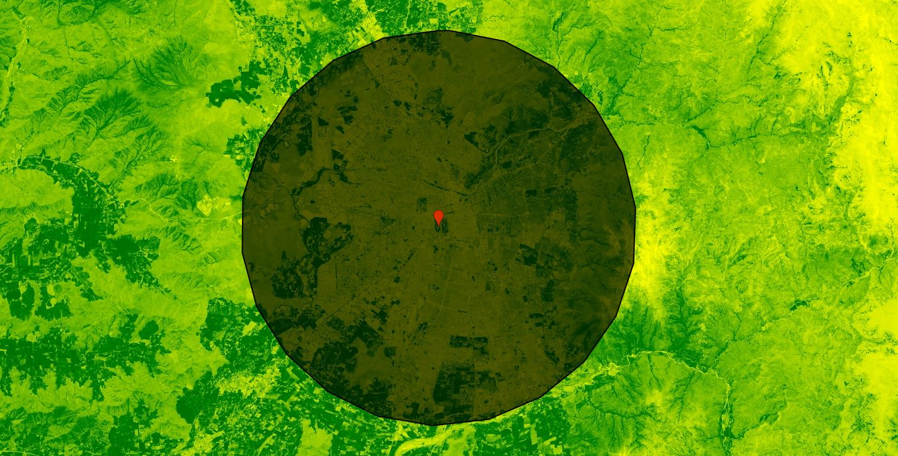

Clase 2: Google Earth Engine
Taller de Monitoreo Ambiental y simulación de inundaciones
Centro de Inteligencia Territorial - UAI
09 de Agosto de 2019
Google Earth Engine: Contenidos
Contenidos
- Índices Normalizados NDVI
- Índices Normalizados NDWI
- Índices Normalizados NDSI
- Pendientes y orientación de laderas
- Efecto de Cortina
- Timelapse Modis
- Frames y Animaciones
- Aplicaciones webs
- Exportar Resultados
Índices Normalizados NDVI
var collection = ee.ImageCollection("LANDSAT/LC08/C01/T1_TOA")
.filterDate('2019-01-01', '2019-03-01')
Map.setCenter(-70.6728, -33.4463, 10);
var composite = collection.median()
// ndvi = (nir - red) / (nir + red)
var nir = composite.select("B5")
var red = composite.select("B4")
print(nir + red) // Error
// + es sumar dos objetos en proxis (instrucciones) no imagenes en el servidor// ndvi = (nir - red) / (nir + red)
var ndvi = composite.expression("(nir - red) / (nir + red)",{
nir: composite.select("B5"), // nir y red variables asignada por diccionario
red: composite.select("B4")
})
Map.addLayer(ndvi,{min:0, max:1,
palette:["yellow", "green", "darkgreen"]} ) 
// NDVI Mediante Función (mejora performance)
function addNDVI(image){
var ndvi = image.expression("(nir - red) / (nir + red)",{
nir: image.select("B5"),
red: image.select("B4")
}).rename("ndvi")
return ndvi
}
var ndvi = addNDVI(composite)
Map.addLayer(ndvi,{min:0, max:1, palette:["yellow", "green", "darkgreen"]} )// Mapeo de la función en la collection
var ndviCollection = collection.map(addNDVI)
Map.addLayer(ndviCollection,{min:0, max:1,
palette:["yellow", "green", "darkgreen"]} ) 
var ndviCollection = collection.map(addNDVI)
// Visulización collection max() (reductores), toma el valor máximo todo el año.
Map.addLayer(ndviCollection.max(),{ //toma los valores maximo de todas las imagenes
palette:["yellow", "green", "darkgreen"]} )
NDVI de año 2018
var result = ee.ImageCollection("LANDSAT/LC08/C01/T1_TOA")
.filterDate('2018-01-01', '2018-12-31')
.map(function(image){
return image.expression("(nir - red) / (nir + red)",{
nir: image.select("B5"),
red: image.select("B4")
})
})
.max()
Map.setCenter(-70.6728, -33.4463, 10);
Map.addLayer(result,{palette:["yellow", "green", "darkgreen"]} ) Índices Normalizados NDWI
var collection = ee.ImageCollection("LANDSAT/LC08/C01/T1_TOA")
.filterDate('2019-01-01', '2019-03-01')
var composite = collection.median()
// NDWI = (green - nir) / (green + nir) // Método McFeeters, 1996
var ndwi = composite.expression("(green - nir) / (green + nir)",{
green: composite.select("B3"),
nir: composite.select("B5")
})
Map.setCenter(-72.4975, -41.1051, 10);
Map.addLayer(ndwi,{palette:["#25b418", "blue", "black"]} ) 
Función cloud masking
Función de NDWI
// NDWI = (green - nir) / (green + nir) // Método McFeeters, 1996
function addNDWI(image){
var ndwi = image.expression("(green - nir) / (green + nir)",{
green: image.select("B3"),
nir: image.select("B5")
}).rename("nswi")
return ndwi
}
var ndwiCollection = collection.map(addNDWI)
Map.setCenter(-72.4975, -41.1051, 10);
Map.addLayer(ndwiCollection.max(),{
palette:["#25b418", "blue", "black"]} ) Función NDWI
var maskL8 = function(image) {
var qa = image.select('BQA');
var mask = qa.bitwiseAnd(1 << 4).eq(0);
return image.updateMask(mask);
}
var collection = ee.ImageCollection("LANDSAT/LC08/C01/T1_TOA")
.filterDate('2019-04-01', '2019-06-01')
.maskL()
// NDWI = (green - nir) / (green + nir) // Método McFeeters, 1996
function addNDWI(image){
var ndwi = image.expression("(green - nir) / (green + nir)",{
green: image.select("B3"),
nir: image.select("B5")
}).rename("nswi")
return ndwi
}
var ndwiCollection = collection.map(addNDWI)
Map.setCenter(-72.4975, -41.1051, 10);
Map.addLayer(ndwiCollection.max(),{
palette:["#25b418", "blue", "black"]} ) Índices Normalizados NDSI
var maskL8 = function(image) {
var qa = image.select('BQA');
var mask = qa.bitwiseAnd(1 << 4).eq(0);
return image.updateMask(mask);
}
var collection = ee.ImageCollection("LANDSAT/LC08/C01/T1_TOA")
.filterDate('2019-01-01', '2019-03-01')
.map(maskL8)
.median()
function addNDSI(image){
var ndsi = image.expression("(green - swir) / (green + swir)",{
swir: image.select("B6"),
green: image.select("B3")
}).rename("ndsi")
return ndsi
}Pendientes y orientación de laderas
Declaración de variables
var paleta1 = ['3ae237', 'b5e22e', 'd6e21f', 'fff705', 'ffd611', 'ffb613', 'ff8b13',
'ff6e08', 'ff500d', 'ff0000', 'de0101', 'c21301', '0602ff', '235cb1', '307ef3', '
269db1', '30c8e2', '32d3ef', '3be285', '3ff38f', '86e26f'];
var paleta2 =[
'0602ff', '235cb1', '307ef3', '269db1', '30c8e2', '32d3ef', '3ae237',
'b5e22e', 'd6e21f', 'fff705', 'ffd611', 'ffb613', 'ff8b13', 'ff6e08',
'ff500d', 'ff0000', 'de0101', 'c21301'];
//Selección de la colección DEM
var DEM = ee.Image("JAXA/ALOS/AW3D30_V1_1");Generación de los mapas de pendientes y orientación de laderas
//Generación de los mapas de pendientes y orientación de laderas
var slope = ee.Terrain.slope (DEM);
var aspect = ee.Terrain.aspect (DEM);
var DSM = DEM.select('AVE');
//Visualización de pendientes
Map.addLayer (slope,{min: 0.0, max: 90.0, palette: paleta1},'Pendientes');
//Visualización de orientación de laderas
Map.addLayer (aspect,{min: 0.0, max: 360.0,palette: paleta1},'Laderas');
//Visualización de DEM
Map.addLayer (DSM,{min: -479.0,max: 8859.0,palette: paleta2},'DEM');Visualización de pendientes
Visualización de orientación de laderas
Visualización de DEM
Efecto de Cortina
colección Sentinel y filtro de fechas y nubes
// Realizamos la composición RGB del mapa inicial
Map.addLayer(Sentinel, {bands: ['B11', 'B8', 'B2'],
gamma: 1, min: 0, max: 5000,}, 'Agricultura');
// Realizamos la composición RGB del segundo mapa
var MapasVinculados = ui.Map();
MapasVinculados.addLayer(Sentinel, {bands: ['B8', 'B4', 'B3'],
gamma: 1, min: 0, max: 5000}, 'Falso color');
// Vinculamos los mapas
var SWIPE = ui.Map.Linker([ui.root.widgets().get(0), MapasVinculados]);// Integramos el efecto swipe creando una cortinilla horizontal o vertical
var SWIPE2 = ui.SplitPanel({
firstPanel: SWIPE.get(0),
secondPanel: SWIPE.get(1),
orientation: 'horizontal', //'horizontal' o 'vertical'
wipe: true,
style: {stretch: 'both'}});
// Mostramos los mapas vinculados con efecto swipe, centramos en coordenada y asignamos zoom
ui.root.widgets().reset([SWIPE2]);
//MapasVinculados.setCenter(-24.366,14.945, 13);Efecto Cortina Sentinel
Timelapse Modis
colección de imágenes y filtramos fechas de análisis
// Llamamos a la colección de imágenes y filtramos fechas de análisis
var MODIS = ee.ImageCollection('MODIS/006/MOD13Q1')
.filterDate('2018-03-01', '2018-08-10');
// Hacemos una llamada a la banda del índice o lo componemos a través del juego de bandas
var IndiceEVI = MODIS.select(['EVI']);
// Definimos las coordenadas máximas y mínimas de visualización en el timelapse
var ZonaAOI = ee.Geometry.Rectangle({
coords: [[-89,-55], [-30,14]]});animación con la colección de imagenes
Parametrizamos el timelapse
imagen compuesta del timelapse sobre el visor
// Adicionalmente visualizamos una imagen compuesta del timelapse sobre el visor
var MODIS_Composicion = ee.Image(IndiceEVI .median());
Map.addLayer (MODIS_Composicion, {
min: 0,
max: 3000,
palette: 'ffffff, fcd163, 99b718, 66a000, 3e8601, 207401, 056201, 004c00, 011301',
bands: ['EVI']},
'Indice EVI');
Map.centerObject(MODIS_Composicion, 2);TimeLapse Modis
Frames y Animaciones
geometry de Santiago
Obtener Imagenes y filtros
// Declaramos una primera variable para obtener imagenes Landsat y filtramos las imágenes
var ColeccionLandsat= ee.ImageCollection ('LANDSAT/LC08/C01/T1_RT')
.filterBounds (geometry) //No olvides digitalizar la zona AOI en la que estás interesado
.filterDate ('2017-01-01', '2017-12-31') // Asigna una fecha para componer el timelapse
.filterMetadata ('CLOUD_COVER', 'Less_Than', 20) //Filtra las imágenes con exceso de nubes
.map(function (image){return image.clip(geometry);});Composisión RGB
// Declaramos una nueva variable bajo la que realizar composiciones RGB o índices
var ComposicionRGB = {
bands: ['B5','B4','B3'], // Realiza tu composición de imágenes
crs: 'EPSG:4326', // Asigna un sistema mediante código EPSG
min: 0.0,
max: 30000.0, // Juega con los valores de píxel para su representación más clara
framesPerSecond: 4, // Añade los frames por segundo para acelerar la animación
dimensions: '600',}; // Parametriza una dimensión máxima de tamaño del gifGeneración GIF y Frames
// Generamos el GIF animado del timelpase e imprimimos su URL para descarga
var AnimacionGIF = ColeccionLandsat.getVideoThumbURL (ComposicionRGB);
print (AnimacionGIF);
// Generamos la secuencia de frames que forman el timelpase e imprimimos su URL para descarga
var FramesPelicula = ColeccionLandsat.getFilmstripThumbURL (ComposicionRGB);
print (FramesPelicula);TimeLapse False Color Santiago
Aplicaciones webs
Crear composición y variables de para visualización
var geometry = ee.Geometry.Point([-70.6728, -33.4463]);
var landsat = ee.ImageCollection("LANDSAT/LC08/C01/T1")
.filterDate('2017-01-01', '2018-01-01')
.filterBounds(geometry)
//descartar pixeles con nubes
var composite = ee.Algorithms.Landsat.simpleComposite({
collection: landsat,
asFloat: true
})
var vis = {
"RGB": {bands: ["B4", "B3", "B2"], min:0, max: 0.3},
"False Color": {bands: ["B5", "B4", "B3"], min:0, max: [0.5, 0.3, 0.3]},
"Thermal": {bands: ["B10"], min: 280, max: 310,
palette: ["blue", "red", "orange", "yellow"]}
}Crear Loop para unir mapas y añadir parámetros de visualización



Exportar Resultados
Buffer sobre NDVI
var collection = ee.ImageCollection("LANDSAT/LC08/C01/T1_TOA")
.filterDate('2019-01-01', '2019-03-01')
function addNDVI(image){
var ndvi = image.expression("(nir - red) / (nir + red)",{
nir: image.select("B5"),
red: image.select("B4")
}).rename("ndvi")
return ndvi
}
var ndviCollection = collection.map(addNDVI)
var maxNDVI = ndviCollection.max()
Map.setCenter(-70.6728, -33.4463, 10);
Map.addLayer(maxNDVI,{palette:["yellow", "green", "darkgreen"]} )
// Crear un punto y un buffer sobre el
var punto_stgo = ee.Geometry.Point([-70.6673068359375, -33.46577773512672]);
var roi = punto_stgo.buffer(20000)
)Export.image.toDrive({
image: maxNDVI,
description: 'maxNDVI_STGO',
region: roi,
scale:30, //resolución imagen
crs: "EPSG:4326"
})